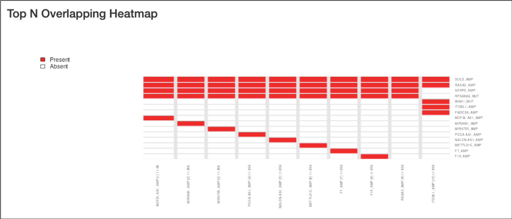
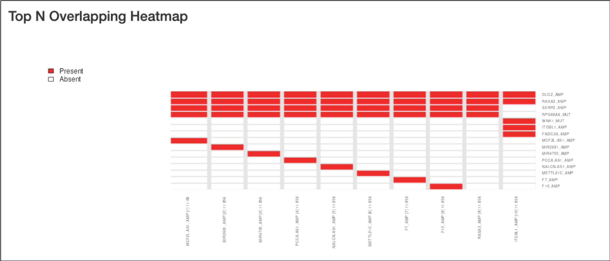

An R Shiny Dashboard for Interacting with CaDrA package
Documentation: https://montilab.github.io/CaDrA/
Web Portal: https://cadra.bu.edu/
Overview
CaDrA-shiny is an interactive Shiny dashboard that was developed to allow users to directly interacting with CaDrA package. CaDrA is an R package that supports a heuristic search framework aimed at identifying candidate drivers of a molecular phenotype of interest (visit our Github repo for more details).
The CaDrA shiny dashboard has two distinctive features:
- Run CaDrA to search for candidate drivers of a molecular phenotype of interest
- Run GSVA to obtain the relative enrichment scores for a given gene sets, then subsequently, these scores are used to run CaDrA to identify complementary features that likely driving the input of molecular phenotype.
Data visualization includes:
- Meta-feature plot
- KS enrichment plot
- Top N candidates overlapping heatmap
- Permutation-based testing plot
The CaDrA.shiny package is containerized using Docker and can be deployed on any Cloud-based services.
Docker Image: montilab/cadra-shiny
Run CaDrA Shiny App on RStudio Desktop
Don’t have RStudio Desktop installed, download here.
(1) Installation
library(devtools)
devtools::install_github("montilab/CaDrA.shiny")(3) Launch CaDrA Shiny App with dataset included in the package
CaDrA.shiny::CaDrA_App(id="myapp")


 
Getting Help
See User Guide for more complete documention of all of CaDrA.shiny’s features.
To get help with CaDrA or CaDrA.shiny, please use the Github dicussion or Github issues.